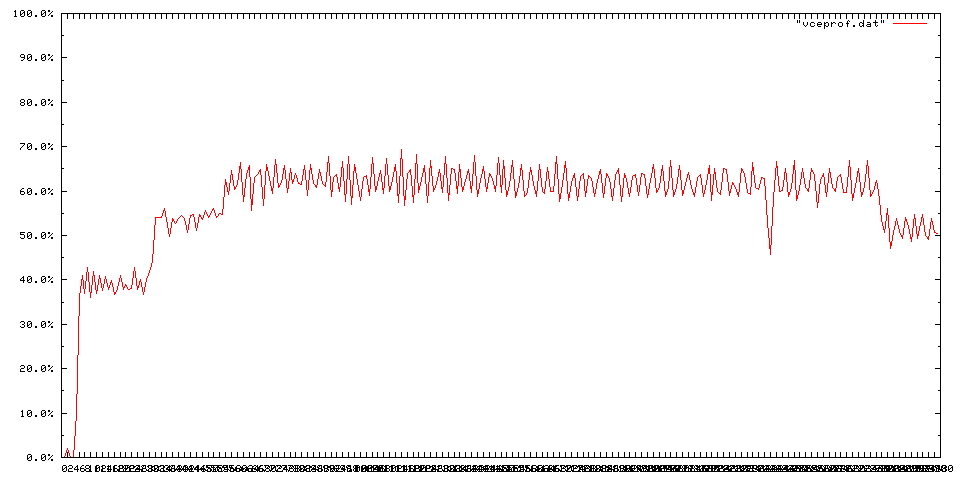

vceprof.rb は topコマンドの出力をrubyで取り出して画像化することによりパフォーマンスを計測するツールである。
vce/linuxlib/bin/performance/vceprof.rb
vce/linuxlib/bin/performance/vceprof.gcm
ruby1.8.0以上
gnuplot3.5以上
[linux]$ top -b -n(回数) -d(間隔、1か2秒) -p(サーバーのPID) > vceprof.txt ※回数は-d1で240(4分)から300(5分)くらい-d2ならその半分
例： [linux]$ top -b -n240 -d1 -p15578 > vceprof.txt
[サーバーマシン]$ ruby vceprof.rb [サーバープログラム名]
例： [linux]$ ruby vceprof.rb gmsv
img-vceprof.png が生成される。
2GHzのsempronでのテストサーバの負荷を測定した場合の結果である。
テストサーバには、圧縮暗号化なしで16kbyteのデータを送信した。接続数は100。
